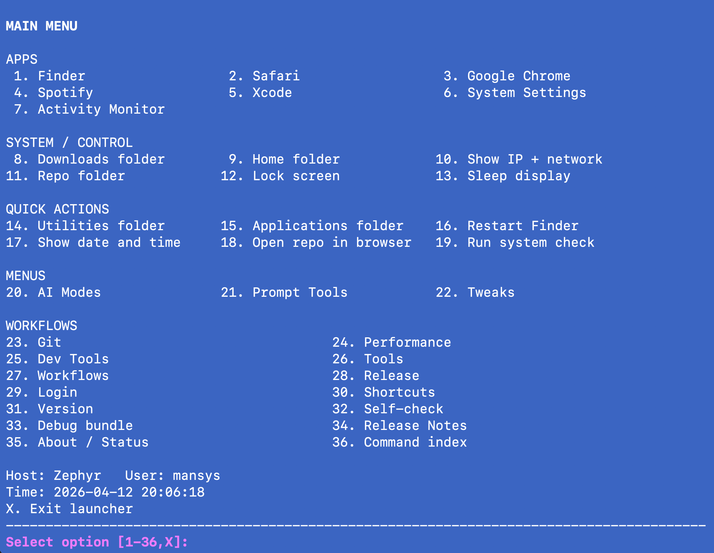
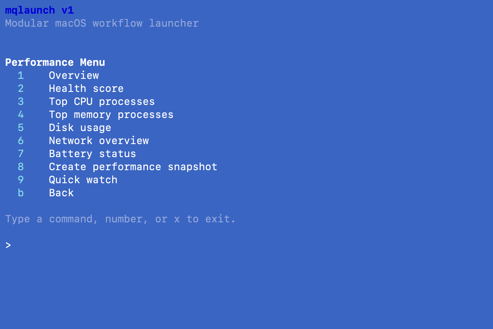
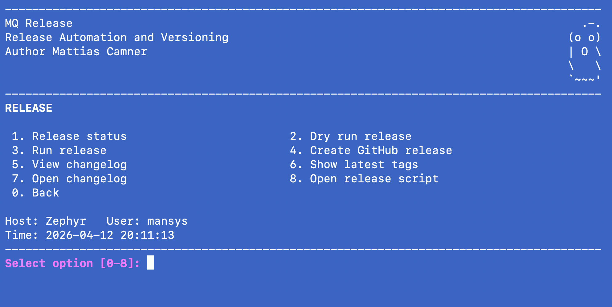

Clone or curl install
Start from the repository and run the installer locally on macOS.
git clone https://github.com/MCamner/macos-scripts.git
cd macos-scripts
./install.sh
Turn scattered shell commands into discoverable workflows for diagnostics, performance checks, release readiness, local HAL status, and repeatable operations.

A short path from first install to the full command surface.
Start from the repository and run the installer locally on macOS.
Doctor checks dependencies and local setup before you explore workflows.
Use the interactive launcher or jump directly to the local HAL command surface.
mqlaunch organizes repeated terminal work by intent instead of by memory.
System, dev, performance, tools, git, release, and help flows live behind one entrypoint.
Doctor, release-check, network tools, debug bundles, and system checks make state visible.
HAL surfaces brief, audit, release readiness, CI, repo status, memory, and safe planning.
Visual entry points for the main menu, HAL, performance, and release workflows.
Grouped observe, plan, memory, and debug commands.
The primary command surface for everyday workflows.

Quick access to resource and performance checks.

Checks, changelog, tags, and publication flow.

The most useful reading paths from the project front door.
Product and architecture story for the toolkit.
Visual page for the HAL command surface.
Full mqlaunch and HAL command inventory.
Searchable macOS terminal reference.